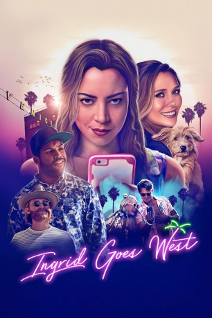

#8633 Ingrid Goes West
 
 IMDB-Wertung: 6.6 / 10
IMDB-Wertung: 6.6 / 10  Tomatometer: 86
Tomatometer: 86  Metascore: 71
Metascore: 71 
Ingrid (Aubrey Plaza) muss den Tod ihrer Mutter verkraften und ist auch aufgrund anderer Erlebnisse aktuell mental nicht wirklich voll zurechnungsfähig. Da erscheint es fast schon als logischer Schritt, die Social-Media-Obsession noch ein Stück weiterzutreiben und sich in den Kopf zu setzen, die Instagram-Angebetete Taylor Sloane auch im echten Leben aufsuchen zu wollen. Wenn die Chemie vor dem Bildschirm schon stimmt, warum dann nicht auch in der Realität? Ingrid macht sich also auf nach Los Angeles, mit dem Ziel, sich Taylor als neue beste Freundin zuzulegen. das Pfefferspray ist zur Hand, ein paar seltsame Jungsabenteuer warten quasi nur darauf ausprobiert zu werden und Chaos ist entsprechend vorprogrammiert. Und irgendwie funkt es zwischen den beiden Frauen tatsächlich und es entsteht ein Band der Freundschaft...
Jahr: 2017
Dauer: 98 Minuten
FSK: 12
Land: USA Studio: NeonTonspuren: DD5.1 - ,
Untertitel:
Auflösung: 1080p (1920x800) Größe: 8099 MB
Genre: Drama, Komödie
Regisseur: Matt Spicer
Drehbuch: David Branson Smith
Soundtrack: Jonathan Sadoff, Nick Thorburn
Darsteller:
 Aubrey Plaza als Ingrid Thorburn
Aubrey Plaza als Ingrid Thorburn Elizabeth Olsen als Taylor Sloane
Elizabeth Olsen als Taylor Sloane O'Shea Jackson Jr. als Dan Pinto
O'Shea Jackson Jr. als Dan Pinto Wyatt Russell als Ezra O'Keefe
Wyatt Russell als Ezra O'Keefe Billy Magnussen als Nicky Sloane
Billy Magnussen als Nicky Sloane Pom Klementieff als Harley Chung
Pom Klementieff als Harley Chung- Hannah Pearl Utt als Nicole
- Angelica Amor als Cindy
 Meredith Hagner als Charlotte
Meredith Hagner als Charlotte- Charlie Wright als Chuck
- Dennis Atlas als Buck
- Malika Williams als Nurse
- Luis Deveze als Mechanic
- Jay Speedy Weingarten als Waiter
- Brandon Johnson als Bouncer
- Vincent van Hinte als Cashier
- Megan Griffey als Bar Patron (uncredited)
- Andrew Horschak als Bar Patron (uncredited)
- Amber Luallen als Waitress (uncredited)
- Aidan Wallace als Logan (uncredited)
- Joseph Breen als Garth Lafayette
- Martin Garcia als Mail Man
- Tina Lorraine als Therapist (uncredited)
- Jana Ritter als Dancing Woman (uncredited)
- Destiny Soria als Cowgirl (uncredited)
Datei: X:\2017(G-M)\Ingrid Goes West (2017, FSK12, 1920x800).mkv seit 25.03.2018
Festplatte: HD 2017(A-Z)-2018(A-F)
 Es gibt insgesamt 148 Filme in der Gruppe '2017(G-M)'
Es gibt insgesamt 148 Filme in der Gruppe '2017(G-M)'